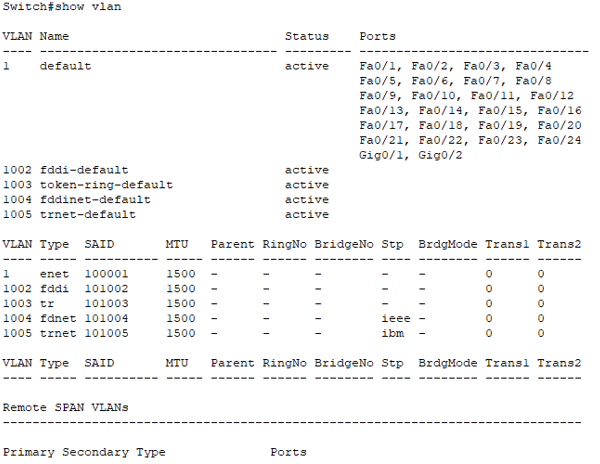
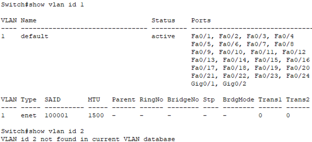
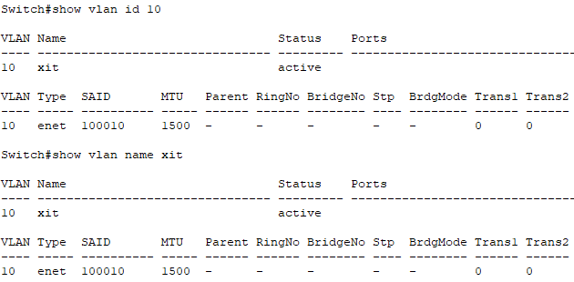
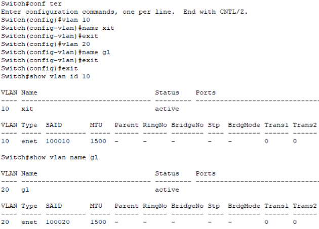
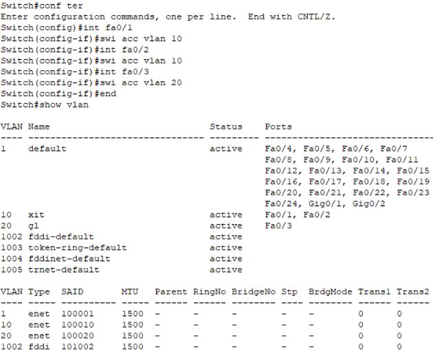

| Switch> | 用户模式，en进入特权模式 |
| Switch# | 特权模式，conf ter进入全局配置模式 |
| Switch#conf | 全局配置 |
| Switch(config-if) | 接口配置 |
| Switch(config-vlan) | VLAN配置 |
| Switch(config-line) | console配置 |
switch(config)#hostname huali
huali(config)#ena pass xxx // 明文密码
huali(config)#ena secret xxx // 密文密码
huali(config)#line console 0 // 选择console口
huali(config-line)#password xxx // 配置密码
huali(config-line)#login // 登陆时检测密码
huali(config)#line vty 0 4
huali(config-line)#password huali
huali(config-line)#login
switch#show vlan

switch#show vlan id 1

switch#show vlan name xit

switch(config)#vlan 10
switch(config-vlan)#name gl

switch(config)#inte fa0/1
switch(config-if)#swi acc vlan 10
